import jax.numpy as jnp
import numpy as np
from jax.scipy.stats import norm
from jax.scipy.special import logsumexp
import jax
import matplotlib.pyplot as plt
import jaxopt
jax.config.update("jax_enable_x64", True)We implement the scale mixture of normals prior. In particular given a function for computing the marginal likelihood \(\ell(z, s)\) we can use autograd to (1) get functions for the posterior mean and variance, and (2) get gradients for the posterior mean and variance with respect to \(z, s\).
# here we check that the gradient based computations work correctly for a simple test case
# y \sim N(b, 1), b \sim (0, 1)
normalize = lambda x: np.exp(x - logsumexp(x))
def log_marginal_normal(z, s, sigma=1.0):
return norm.logpdf(z, loc=0., scale=jnp.sqrt(s**2 + sigma**2))
# compute posterior mean and variance by tweedie's formula
posterior_mean = lambda z, s: z + s**2 * jax.grad(log_marginal_normal)(z, s, 1.)
posterior_variance = lambda z, s: s**2 * (1 + s**2 * jax.grad(jax.grad(log_marginal_normal))(z, s, 1.))
z = 3.
s = 1.
# 3/2, 1 / (1 + 1)
posterior_mean(z, s), posterior_variance(z, s)
z = 1.
s = np.sqrt(0.5)
# 2/3, 1 / (1 + 2)
posterior_mean(z, s), posterior_variance(z, s)(Array(0.66666667, dtype=float64), Array(0.33333333, dtype=float64))from functools import partial
# g is a scale mixture of normals (possibly with a point mass at 0)
def log_marginal(z, s, pi, sigma_grid):
return logsumexp(jnp.log(pi) + norm.logpdf(z, loc=0., scale=jnp.sqrt(s**2 + sigma_grid**2)))
pi = np.ones(5)/5
sigma_grid = np.arange(5) + 1
log_marginal_g = partial(log_marginal, pi=pi, sigma_grid=sigma_grid)
# this is for the gaussian error model
posterior_mean = lambda z, s: z + s**2 * jax.grad(log_marginal_g)(z, s)
posterior_variance = lambda z, s: s**2 * (1. + s**2 * jax.grad(jax.grad(log_marginal_g))(z, s))
kappa = lambda z, s: log_marginal_g(z, s) - norm.logpdf(z, 0, s)
Eeta = lambda z, s: jax.grad(kappa)(z, s)
Eeta2 = lambda z, s: Eeta(z, s)**2 + jax.grad(Eeta)(z,s)
KL = lambda z, s: z * Eeta(z, s) - Eeta2(z, s) * s**2/2 - kappa(z, s)
#KL = lambda: z, s: z * posterior_mean(z, s)/s**2 - 0.5 * posterior_variance(z, s)/s**2
# this would work substituting other exponential families
posterior_mean2 = lambda z, s: s**2 * (jax.grad(log_marginal_g)(z, s) - jax.grad(norm.logpdf)(z, 0, s))
posterior_variance2 = lambda z, s: s**4 * (jax.grad(jax.grad(log_marginal_g))(z, s) - jax.grad(jax.grad(norm.logpdf))(z, 0, s))# test relationship between tweedies formula and general exponential family version
s = 4.
posterior_mean(1., s) - s**2 * Eeta(1., s)Array(0., dtype=float64, weak_type=True)# test relationship between tweedies formula and general exponential family version
posterior_variance2 = lambda z, s: s**4 * Eeta2(z, s) - (s**2 * Eeta(z, s))**2
z, s = 1., 4.
posterior_variance(z, s) - posterior_variance2(z, s)Array(0., dtype=float64, weak_type=True)# this is for the gaussian error model
def make_functions(log_marginal_g):
# tweedie type formula for posterior mean and variance
posterior_mean = lambda z, s: z + s**2 * jax.grad(log_marginal_g)(z, s)
posterior_variance = lambda z, s: s**2 * (1. + s**2 * jax.grad(jax.grad(log_marginal_g))(z, s))
# natural parameter
kappa = lambda z, s: log_marginal_g(z, s) - norm.logpdf(z, 0, s)
Eeta = lambda z, s: jax.grad(kappa)(z, s)
Eeta2 = lambda z, s: Eeta(z, s)**2 + jax.grad(Eeta)(z,s)
KL = lambda z, s: z * Eeta(z, s) - 0.5 * Eeta2(z, s) * s**2 - kappa(z, s)
def Eqlogp(z, s, X, y, tau):
mu = jax.vmap(posterior_mean)(z, s)
V = jax.vmap(posterior_variance)(z, s)
yhat = X @ mu
d = jnp.diag(X.T @ X)
return - 0.5 * tau * (jnp.sum((y - yhat)**2) + jnp.sum(d * V))
def elbo(z, s, X, y, tau):
return Eqlogp(z, s, X, y, tau) - jnp.sum(jax.vmap(KL)(z, s))
def posterior(nu):
z = nu['z']
s = jnp.log(1 + jnp.exp(nu['log1exps']))
mu = jax.vmap(posterior_mean)(z, s)
var = jax.vmap(posterior_variance)(z, s)
return mu, var
def objective(nu, X, y, tau):
z = nu['z']
s = jnp.log(1 + jnp.exp(nu['log1exps']))
return -elbo(z, s, X, y, tau)
def fit_lbfgs(y, X, tau, maxiter=100):
p = X.shape[1]
solver = jaxopt.ScipyMinimize(fun=objective, maxiter=maxiter)
nu = dict(z=np.zeros(p), log1exps=np.ones(p)) # initialize variational parameters
res = solver.run(nu, X=X, y=y, tau=tau) # optimize
mu, var = posterior(res.params)
return dict(res=res, mu=mu, var=var)
return fit_lbfgs, objective, posterior, KLGaussian error, gaussian prior
In this special case, we can implement the CAVI updates very easily in closed form. We see good agreement between the CAVI results and gradient descent on the compound objective.
Fixed \(g\)
# mean field updates
# simulate
def simulate_gaussian(n, p, tau=1, tau0=1., seed=1):
np.random.seed(seed)
X = np.random.normal(size=(n, p))
b = np.random.normal(size=p) / np.sqrt(tau0)
y = X @ b + np.random.normal(size=n)/np.sqrt(tau)
return dict(y=y, X=X, b=b, tau=tau, tau0=tau0, seed=seed)
def kl_univariate_gaussian(muq, varq, varg):
return 0.5 * np.sum((varq + muq**2)/varg + np.log(varg/varq) - 1)
def elbo_cavi(mu, var, y, X, tau, tau0):
ybar = X @ mu
d = np.diag(X.T @ X)
#kl = 0.5 * np.sum((var + mu)**2 * tau0 + np.log(tau0 * var) - 1)
kl = kl_univariate_gaussian(mu, var, 1/tau0)
Eloglik = -0.5 * tau * np.sum((y-ybar)**2) - 0.5 * tau * np.sum(d * var)
return Eloglik - kl
def gaussian_mr_cavi(y, X, tau, tau0, maxiter=100):
n, p = X.shape
mu = np.zeros(X.shape[1])
var = np.ones(X.shape[1])
d = np.diag(X.T @ X)
r = y - X @ mu
elbos = [elbo_cavi(mu, var, y, X, tau, tau0)]
for i in range(maxiter):
for j in range(p):
r = r + X[:, j] * mu[j]
shrink = tau * d[j] /(tau * d[j] + tau0)
bhat = np.sum(r * X[:, j]) / d[j]
mu[j] = shrink * bhat
var[j] = 1/(tau * d[j] + tau0)
r = r - X[:,j] * mu[j]
elbos.append(elbo_cavi(mu, var, y, X, tau, tau0))
return dict(mu=mu, var=var, elbo=np.array(elbos), tau=tau, tau0=tau0)# the larger the prior precision, the more aggressive shrinkage.
sim = simulate_gaussian(1000, 10, tau=1., tau0=1.)
get_range = lambda x: [x.min(), x.max()]
y, X, b = sim['y'], sim['X'], sim['b']
cavi_fit1 = gaussian_mr_cavi(y, X, 1., 1000.)
cavi_fit2 = gaussian_mr_cavi(y, X, 1., 100.)
cavi_fit3 = gaussian_mr_cavi(y, X, 1., 10.)
plt.scatter(b, cavi_fit1['mu'])
plt.scatter(b, cavi_fit2['mu'])
plt.scatter(b, cavi_fit3['mu'])
plt.plot(get_range(b), get_range(b), c='k', linestyle='dotted')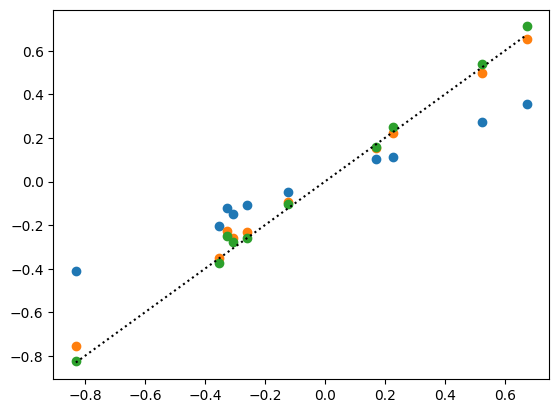
def log_marginal_normal(z, s, tau0):
return norm.logpdf(z, loc=0., scale=jnp.sqrt(s**2 + 1/tau0))
maxiter = 1000
fit_lbfgs, objective, posterior, KL = make_functions(partial(log_marginal_normal, tau0=1000.))
compound_fit1 = fit_lbfgs(y, X, 1., maxiter)
fit_lbfgs, objective, posterior, KL = make_functions(partial(log_marginal_normal, tau0=100.))
compound_fit2 = fit_lbfgs(y, X, 1., maxiter)
fit_lbfgs, objective, posterior, KL = make_functions(partial(log_marginal_normal, tau0=10.))
compound_fit3 = fit_lbfgs(y, X, 1., maxiter)
plt.scatter(b, compound_fit1['mu'])
plt.scatter(b, compound_fit2['mu'])
plt.scatter(b, compound_fit3['mu'])
plt.plot(get_range(b), get_range(b), c='k', linestyle='dotted')
plt.ylim(get_range(b))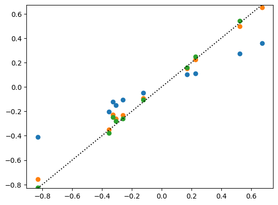
fig, ax = plt.subplots(2, 3)
plt.sca(ax[0,0])
plt.scatter(cavi_fit1['mu'], compound_fit1['mu'])
plt.plot(get_range(cavi_fit1['mu']), get_range(cavi_fit1['mu']), color='k', linestyle='dotted')
plt.title('mean, tau0 = 1000')
plt.xlabel('CAVI')
plt.ylabel('compound')
plt.sca(ax[0,1])
plt.scatter(cavi_fit2['mu'], compound_fit2['mu'])
plt.plot(get_range(cavi_fit2['mu']), get_range(cavi_fit2['mu']), color='k', linestyle='dotted')
plt.title('mean, tau0 = 100')
plt.xlabel('CAVI')
plt.ylabel('compound')
plt.sca(ax[0,2])
plt.scatter(cavi_fit3['mu'], compound_fit3['mu'])
plt.plot(get_range(cavi_fit3['mu']), get_range(cavi_fit3['mu']), color='k', linestyle='dotted')
plt.title('mean, tau0 = 10')
plt.xlabel('CAVI')
plt.ylabel('compound')
plt.sca(ax[1,0])
plt.scatter(cavi_fit1['var'], compound_fit1['var'])
plt.plot(get_range(cavi_fit1['var']), get_range(cavi_fit1['var']), color='k', linestyle='dotted')
plt.title('var, tau0 = 1000')
plt.xlabel('CAVI')
plt.ylabel('compound')
plt.sca(ax[1,1])
plt.scatter(cavi_fit2['var'], compound_fit2['var'])
plt.plot(get_range(cavi_fit2['var']), get_range(cavi_fit2['var']), color='k', linestyle='dotted')
plt.title('mean, tau0 = 100')
plt.xlabel('CAVI')
plt.ylabel('compound')
plt.sca(ax[1,2])
plt.scatter(cavi_fit3['var'], compound_fit3['var'])
plt.plot(get_range(cavi_fit3['var']), get_range(cavi_fit3['var']), color='k', linestyle='dotted')
plt.title('mean, tau0 = 10')
plt.xlabel('CAVI')
plt.ylabel('compound')
plt.tight_layout()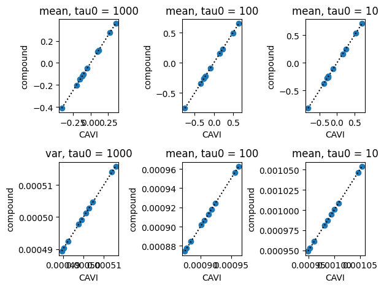
print(f"CAVI solution ELBO = {cavi_fit1['elbo'][-1]:.2f}, Combound solution ELBO = {-compound_fit1['res'].state.fun_val:.2f}")CAVI solution ELBO = -982.67, Combound solution ELBO = -982.67Estimate prior variance
Now we will try to estimate the prior variance. There is only one parameter controlling the prior family, namely, the prior variance. A simple strategy is to look across a fixed grid of values. Then we will try to optimize the ELBO w.r.t the prior variance through gradient based optimization.
# this is for the gaussian error model
def make_functions2(log_marginal_g, transforms):
# tweedie type formula for posterior mean and variance
posterior_mean = lambda z, s, params: z + s**2 * jax.grad(log_marginal_g)(z, s, **params)
posterior_variance = lambda z, s, params: s**2 * (1. + s**2 * jax.grad(jax.grad(log_marginal_g))(z, s, **params))
# natural parameter
kappa = lambda z, s, params: log_marginal_g(z, s, **params) - norm.logpdf(z, 0, s)
Eeta = lambda z, s, params: jax.grad(kappa)(z, s, params)
Eeta2 = lambda z, s, params: Eeta(z, s, params)**2 + jax.grad(Eeta)(z,s, params)
KL = lambda z, s, params: z * Eeta(z, s, params) - 0.5 * Eeta2(z, s, params) * s**2 - kappa(z, s, params)
def Eqlogp(z, s, params, X, y, tau):
mu = jax.vmap(posterior_mean, (0, 0, None))(z, s, params)
V = jax.vmap(posterior_variance, (0, 0, None))(z, s, params)
yhat = X @ mu
d = jnp.diag(X.T @ X)
return - 0.5 * tau * (jnp.sum((y - yhat)**2) + jnp.sum(d * V))
def elbo(z, s, params, X, y, tau):
return Eqlogp(z, s, params, X, y, tau) - jnp.sum(jax.vmap(KL, (0, 0, None))(z, s, params))
def posterior(nu):
z = nu['z']
s = jnp.log(1 + jnp.exp(nu['s']))
params = {k: transforms[k](v) for k, v in nu['params'].items()}
mu = jax.vmap(posterior_mean, (0, 0, None))(z, s, params)
var = jax.vmap(posterior_variance, (0, 0, None))(z, s, params)
return mu, var
# we can take gradients with respect to nu, which includes variational parameters and the parameters of the prior
def objective(nu, X, y, tau):
z = nu['z']
s = jnp.log(1 + jnp.exp(nu['s']))
params = {k: transforms[k](v) for k, v in nu['params'].items()}
return -elbo(z, s, params, X, y, tau)
def fit_lbfgs(y, X, tau, nu_init, maxiter=100):
p = X.shape[1]
solver = jaxopt.ScipyMinimize(fun=objective, maxiter=maxiter)
nu = dict(z=np.zeros(p), log1exps=np.ones(p)) # initialize variational parameters
res = solver.run(nu_init, X=X, y=y, tau=tau) # optimize
mu, var = posterior(res.params)
return dict(res=res, mu=mu, var=var)
return fit_lbfgs, objective, posterior, KL# more variables here so that there are enough examples to learn the prior variance from.
n, p = 1000, 100
sim = simulate_gaussian(n, p, tau=1., tau0=10., seed=2)
get_range = lambda x: [x.min(), x.max()]
y, X, b = sim['y'], sim['X'], sim['b']
transforms = dict(
tau0 = lambda x: jnp.log(1 + jnp.exp(x))
)
nu_init = dict(
z = np.zeros(p),
s = np.ones(p),
params = dict(
tau0 = 10.
)
)
def log_marginal_normal(z, s, tau0=1.0):
return norm.logpdf(z, loc=0., scale=jnp.sqrt(s**2 + 1/tau0))tau0s = 10**np.linspace(0, 1.5, 50)
cavi_fits = [gaussian_mr_cavi(y, X, 1., tau0) for tau0 in tau0s]
elbos = np.array([fit['elbo'][-1] for fit in cavi_fits])plt.plot(tau0s, elbos)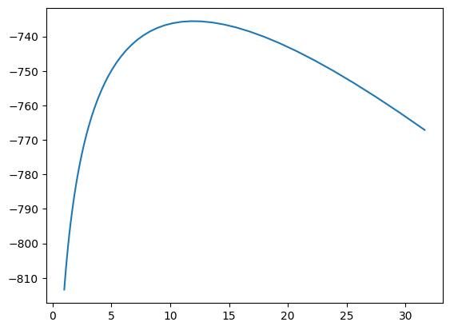
def fit_fixed_tau0(tau0):
maxiter = 10000
fit_lbfgs, objective, posterior, KL = make_functions(partial(log_marginal_normal, tau0=tau0))
return fit_lbfgs(y, X, 1., maxiter)
compound_fits = [fit_fixed_tau0(tau0) for tau0 in tau0s]
compound_elbos = np.array([fit['res'].state.fun_val for fit in compound_fits])
plt.plot(tau0s, compound_elbos)sim = simulate_gaussian(1000, 100, tau=1., tau0=1., seed=1)
get_range = lambda x: [x.min(), x.max()]
tau0 = 10.
y, X, b = sim['y'], sim['X'], sim['b']
cavi_fit = gaussian_mr_cavi(y, X, 1., tau0)
maxiter = 10000
fit_lbfgs, objective, posterior, KL = make_functions(partial(log_marginal_normal, tau0=tau0))
compound_fit = fit_lbfgs(y, X, 1., maxiter)
def plot_mu(cavi_fit, compound_fit):
fig, ax = plt.subplots(1, 2)
plt.sca(ax[0])
plt.scatter(cavi_fit['mu'], compound_fit['mu'])
plt.plot(get_range(cavi_fit['mu']), get_range(cavi_fit['mu']), color='k', linestyle='dotted')
plt.title('Posterior Mean')
plt.ylabel('Compound')
plt.xlabel('CAVI')
plt.sca(ax[1])
plt.scatter(cavi_fit['var'], compound_fit['var'])
plt.plot(get_range(cavi_fit['var']), get_range(cavi_fit['var']), color='k', linestyle='dotted')
plt.title('Posterior Variance')
plt.xlabel('CAVI')
plt.tight_layout()
plt.show()
plot_mu(cavi_fit, compound_fit)
print(f"CAVI solution ELBO = {cavi_fit['elbo'][-1]:.2f}, Combound solution ELBO = {-compound_fit['res'].state.fun_val:.2f}")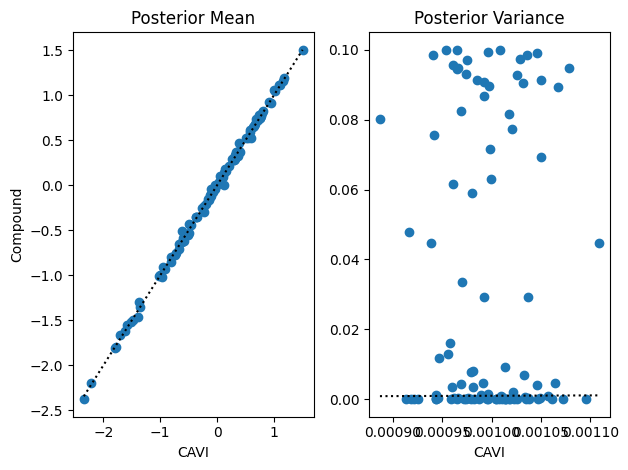
CAVI solution ELBO = -1019.20, Combound solution ELBO = -2636.74tau0 = 10.
cavi_fit = gaussian_mr_cavi(y, X, 1., tau0)
compound_fit = fit_fixed_tau0(tau0)cavi_fit['elbo'][-1], compound_fit['res'].state.fun_val(np.float64(-736.332976336279),
Array(3432.76481919, dtype=float64, weak_type=True))plt.scatter(cavi_fit['mu'], compound_fit['mu'])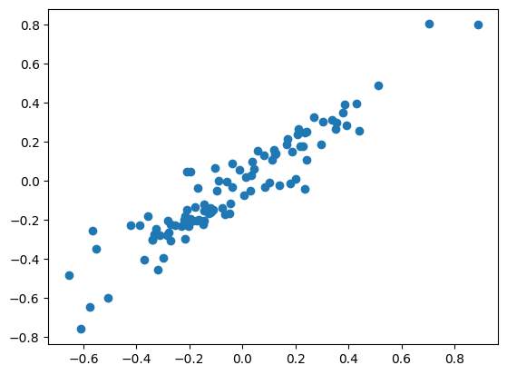
elbos2 = [-fit['res'].state.fun_val for fit in fits]
plt.plot(elbos, elbos2)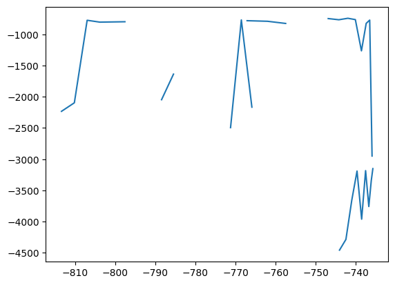
elbos2[Array(-2233.08828511, dtype=float64, weak_type=True),
Array(-2096.18983947, dtype=float64, weak_type=True),
Array(-774.02871917, dtype=float64, weak_type=True),
Array(-803.84306293, dtype=float64, weak_type=True),
Array(-800.70384499, dtype=float64, weak_type=True),
Array(-797.59266662, dtype=float64, weak_type=True),
Array(nan, dtype=float64, weak_type=True),
Array(nan, dtype=float64, weak_type=True),
Array(-2046.6561363, dtype=float64, weak_type=True),
Array(-1636.65300844, dtype=float64, weak_type=True),
Array(nan, dtype=float64, weak_type=True),
Array(-1559.64058631, dtype=float64, weak_type=True),
Array(nan, dtype=float64, weak_type=True),
Array(nan, dtype=float64, weak_type=True),
Array(-2494.04162933, dtype=float64, weak_type=True),
Array(-768.55212925, dtype=float64, weak_type=True),
Array(-2166.01574364, dtype=float64, weak_type=True),
Array(nan, dtype=float64, weak_type=True),
Array(nan, dtype=float64, weak_type=True),
Array(nan, dtype=float64, weak_type=True),
Array(nan, dtype=float64, weak_type=True),
Array(-1744.26440574, dtype=float64, weak_type=True),
Array(nan, dtype=float64, weak_type=True),
Array(-1443.48115985, dtype=float64, weak_type=True),
Array(nan, dtype=float64, weak_type=True),
Array(nan, dtype=float64, weak_type=True),
Array(-4456.63731925, dtype=float64, weak_type=True),
Array(-4285.31342852, dtype=float64, weak_type=True),
Array(-3657.86000308, dtype=float64, weak_type=True),
Array(-3189.92972406, dtype=float64, weak_type=True),
Array(-3960.20701852, dtype=float64, weak_type=True),
Array(-3183.15418399, dtype=float64, weak_type=True),
Array(-3757.99806481, dtype=float64, weak_type=True),
Array(-3344.9100764, dtype=float64, weak_type=True),
Array(-3150.94363406, dtype=float64, weak_type=True),
Array(nan, dtype=float64, weak_type=True),
Array(nan, dtype=float64, weak_type=True),
Array(-2949.25193201, dtype=float64, weak_type=True),
Array(-771.22079598, dtype=float64, weak_type=True),
Array(-823.78279764, dtype=float64, weak_type=True),
Array(-1264.03373314, dtype=float64, weak_type=True),
Array(-763.51500337, dtype=float64, weak_type=True),
Array(-741.98594706, dtype=float64, weak_type=True),
Array(-765.7230467, dtype=float64, weak_type=True),
Array(-746.87932362, dtype=float64, weak_type=True),
Array(nan, dtype=float64, weak_type=True),
Array(nan, dtype=float64, weak_type=True),
Array(-824.88598536, dtype=float64, weak_type=True),
Array(-790.06144132, dtype=float64, weak_type=True),
Array(-780.6909028, dtype=float64, weak_type=True)]maxiter = 100
#fit = fit_lbfgs(y, X, 1., maxiter)
#fit['res'].state.fun_val
transforms = dict(
tau0 = lambda x: jnp.log(1 + jnp.exp(x))
)
nu_init = dict(
z = np.zeros(p),
s = np.ones(p),
params = dict(
tau0 = 10.
)
)
fit_lbfgs, objective, posterior, KL = make_functions2(log_marginal_normal, transforms)
res = fit_lbfgs(y, X, 1., nu_init, maxiter=10)res['res'].params['params']['tau0']Array(9.96947586, dtype=float64)res['res'].state.fun_valArray(5607.1786817, dtype=float64, weak_type=True)Different error models
# this is for the gaussian error model
def log_likelihood_normal(b, X, y, tau=1.0):
yhat = X@b
return 0.5 * jnp.log(tau/(2 * jnp.pi)) - 0.5 * tau * jnp.sum((y - yhat)**2)
def make_functions3(log_likelihood, log_marginal_g, transforms):
# tweedie type formula for posterior mean and variance
posterior_mean = lambda z, s, params, fixed_params: z + s**2 * jax.grad(log_marginal_g)(z, s, **params, **fixed_params)
posterior_variance = lambda z, s, params, fixed_params: s**2 * (1. + s**2 * jax.grad(jax.grad(log_marginal_g))(z, s, **params, **fixed_params))
# natural parameter
kappa = lambda z, s, params, fixed_params: log_marginal_g(z, s, **params, **fixed_params) - norm.logpdf(z, 0, s)
Eeta = lambda z, s, params, fixed_params: jax.grad(kappa)(z, s, params, fixed_params)
Eeta2 = lambda z, s, params, fixed_params: Eeta(z, s, params, fixed_params)**2 + jax.grad(Eeta)(z,s, params, fixed_params)
KL = lambda z, s, params, fixed_params: z * Eeta(z, s, params, fixed_params) - 0.5 * Eeta2(z, s, params, fixed_params) * s**2 - kappa(z, s, params, fixed_params)
def Eqlogp(z, s, lparams, lparams_fixed, gparams, gparams_fixed, X, y):
mu = jax.vmap(posterior_mean, (0, 0, None, None))(z, s, gparams, gparams_fixed)
V = jax.vmap(posterior_variance, (0, 0, None, None))(z, s, gparams, gparams_fixed)
# possible speed up: https://github.com/jax-ml/jax/issues/3801#issuecomment-2155354413
D = jnp.diag(jax.hessian(log_likelihood)(mu, X, y, **lparams, **lparams_fixed))
return log_likelihood(mu, X, y, **lparams, **lparams_fixed) + jnp.sum(D * V)
def elbo(z, s, lparams, lparams_fixed, gparams, gparams_fixed, X, y):
return Eqlogp(z, s, lparams, lparams_fixed, gparams, gparams_fixed, X, y) - jnp.sum(jax.vmap(KL, (0, 0, None, None))(z, s, gparams, gparams_fixed))
def posterior(params, params_fixed):
z = params['z']
s = jnp.log(1 + jnp.exp(params['s']))
gparams = {k: transforms[k](v) for k, v in params['gparams'].items()}
gparams_fixed = params_fixed['gparams']
mu = jax.vmap(posterior_mean, (0, 0, None, None))(z, s, gparams, gparams_fixed)
var = jax.vmap(posterior_variance, (0, 0, None, None))(z, s, gparams, gparams_fixed)
return mu, var
# we can take gradients with respect to nu, which includes variational parameters and the parameters of the prior
def objective(params, params_fixed, X, y):
z = params['z']
s = jnp.log(1 + jnp.exp(params['s']))
lparams = {k: transforms[k](v) for k, v in params['lparams'].items()}
lparams_fixed = params_fixed['lparams']
gparams = {k: transforms[k](v) for k, v in params['gparams'].items()}
gparams_fixed = params_fixed['gparams']
return -elbo(z, s, lparams, lparams_fixed, gparams, gparams_fixed, X, y)
def fit(y, X, params_init, params_fixed, maxiter=100):
p = X.shape[1]
solver = jaxopt.ScipyMinimize(fun=objective, maxiter=maxiter)
res = solver.run(params_init, X=X, y=y, params_fixed=params_fixed) # optimize
mu, var = posterior(res.params, params_fixed)
return dict(res=res, mu=mu, var=var)
return fit, objective, posterior, KLtransforms = dict(
tau0 = lambda x: jnp.log(1 + jnp.exp(x))
)
params_init = dict(
z = np.zeros(p),
s = np.ones(p),
gparams = dict(),
lparams = dict(),
)
params_fixed = dict(
lparams = dict(tau = 0.01), # residual error precision
gparams = dict(tau0 = 10.) # prior effect precision
)
fit_fun, objective, posterior, KL = make_functions3(log_likelihood_normal, log_marginal_normal, transforms)
sim = simulate_gaussian(1000, 100, tau=1., tau0=1., seed=1)
y, X, b = sim['y'], sim['X'], sim['b']
fit = fit_fun(y, X, params_init, params_fixed, maxiter=100)
cavi_fit = gaussian_mr_cavi(y, X, tau=.01, tau0=10.0)plt.scatter(cavi_fit['mu'], fit['mu'])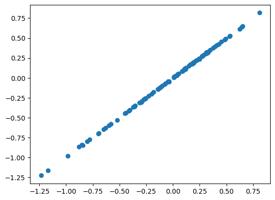
# mean field updates
# simulate
def log_likelihood_logistic(b, X, y):
eta = X@b
return jnp.sum(y * eta - jnp.log(1 + jnp.exp(eta)))
def simulate_logistic(n, p, tau0=1., seed=1):
np.random.seed(seed)
X = np.random.normal(size=(n, p))
b = np.random.normal(size=p) / np.sqrt(tau0)
logit = X @ b
p = 1 / (1 + np.exp(-logit))
y = np.random.binomial(1, p)
return dict(y=y, X=X, b=b, tau0=tau0, seed=seed)
transforms = dict(
tau0 = lambda x: jnp.log(1 + jnp.exp(x))
)
params_init = dict(
z = np.zeros(p),
s = np.ones(p),
gparams = dict(),
lparams = dict(),
)
params_fixed = dict(
lparams = dict(), # residual error precision
gparams = dict(tau0 = 10.) # prior effect precision
)
fit_fun, objective, posterior, KL = make_functions3(log_likelihood_logistic, log_marginal_normal, transforms)
sim = simulate_logistic(1000, 100, tau0=10., seed=11)
y, X, b = sim['y'], sim['X'], sim['b']
fit_logistic = fit_fun(y, X, params_init, params_fixed, maxiter=100)
plt.scatter(b, compound_fit_logistic['mu'])
plt.plot(get_range(b), get_range(b), color='k', linestyle='dotted')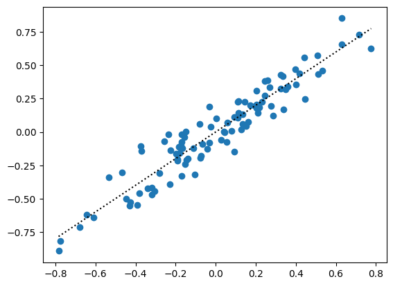
Scale mixture of normals
# g is a scale mixture of normals (possibly with a point mass at 0)
def log_marginal(z, s, pi, sigma_grid):
return logsumexp(jnp.log(pi) + norm.logpdf(z, loc=0., scale=jnp.sqrt(s**2 + sigma_grid**2)))
def simulate(n, p, tau=1, pi=np.ones(2)*0.5, sigma_grid=np.array([0., 1.]),seed=1):
np.random.seed(seed)
X = np.random.normal(size=(n, p))
b = np.random.normal(size=p) * np.random.choice(sigma_grid, p, replace=True, p=pi)
y = X @ b + np.random.normal(size=n)/np.sqrt(tau)
return dict(y=y, X=X, b=b, tau=tau, pi=pi, sigma_grid=sigma_grid, seed=seed)?np.random.sampleSignature: np.random.sample(*args, **kwargs) Type: cython_function_or_method String form: <cyfunction sample at 0x11b03f510> Docstring: This is an alias of `random_sample`. See `random_sample` for the complete documentation.
sim = simulate(1000, 1000)Fixed \(g\)
X, y, b = sim['X'], sim['y'], sim['b']
pi = np.ones(2) / 2
sigma_grid = np.arange(2)
log_marginal_g = partial(log_marginal, pi=pi, sigma_grid=sigma_grid)
maxiter = 1000
fit_lbfgs, objective, posterior, KL = make_functions(log_marginal_g)
compound_fit = fit_lbfgs(y, X, 1., maxiter)
plt.scatter(b, compound_fit['mu'])
plt.plot(get_range(b), get_range(b), c='k', linestyle='dotted')
plt.ylim(get_range(b))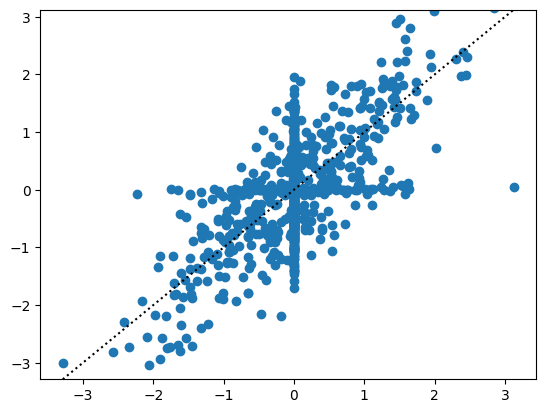
Estimate \(g\): scale mixture of normals
Can we estimate \(\pi\)?
First we rewrite the objective function generator so that it can take extra arguments.
n, p = X.shape
pi = np.ones(2) / 2
sigma_grid = np.arange(2)
# still needs kwarg pi
log_marginal_g = partial(log_marginal, sigma_grid=sigma_grid)
normalize = lambda x: jnp.exp(x - logsumexp(x))
transforms = dict(
pi = lambda x: normalize(jnp.concat([jnp.zeros(1), x]))
)
nu_init = dict(
z = np.zeros(p),
s = np.ones(p),
params = dict(
pi = np.ones(1)
)
)
fit_lbfgs, objective, posterior, KL = make_functions2(log_marginal_g, transforms)
res = fit_lbfgs(y, X, 1., nu_init, maxiter=10)res['res'].state.fun_valArray(257171.97473841, dtype=float64, weak_type=True)res['res'].params['params']['pi'], transforms['pi'](res['res'].params['params']['pi'])(Array([-57.26714742], dtype=float64),
Array([1.00000000e+00, 1.34646131e-25], dtype=float64))mu, var = posterior(res['res'].params)
plt.scatter(b, mu)
plt.plot(get_range(b), get_range(b), color='k', linestyle='dotted')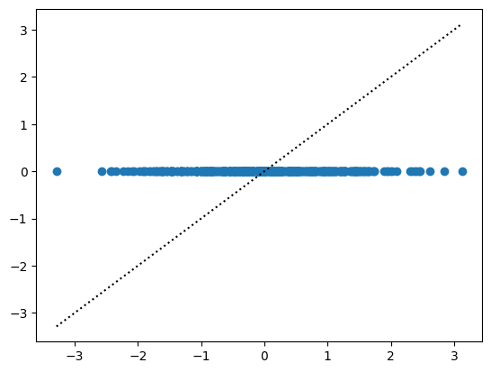
Logistic regression
The other change we want to make is to
z, s = compound_fit3['res'].params['z'], np.log(1 + np.exp(compound_fit3['res'].params['log1exps']))
jax.vmap(KL)(z, s).sum()Array(27.74933929, dtype=float64)mu, var = posterior(compound_fit3['res'].params)
kl_univariate_gaussian(mu, var, 0.1)Array(27.74933929, dtype=float64)mu, var = compound_fit3['mu'], compound_fit3['var']
compound_fit3['res'].state.fun_val, -elbo_cavi(mu, var, y, X, 1., 10.), -elbo_cavi(cavi_fit3['mu'], cavi_fit3['var'], y, X, 1., 10.)(Array(523.85889506, dtype=float64, weak_type=True),
Array(523.85889506, dtype=float64),
np.float64(523.8588950591209))fit, ax = plt.subplots(1, 2)
plt.sca(ax[0])
plt.scatter(cavi_fit3['mu'], compound_fit3['mu'])
plt.sca(ax[1])
plt.scatter(cavi_fit3['var'], compound_fit3['var'])
plt.tight_layout()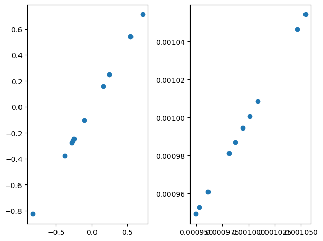
Array([-0.13567134, 0.26544161, -0.40584675, -0.85080322, -0.30657902,
0.12930233, 0.7454886 , -0.24539989, -0.26072837, 0.57516103], dtype=float64)np.arange(9).reshape((3, 3))[:, -1]array([2, 5, 8])objective(nu, X, y), objective(res.params, X, y)(Array(11018.78375662, dtype=float64), Array(-1.32008246e+18, dtype=float64))z = res.params['z']
s = np.exp(res.params['logs'])
jnp.sum(jax.vmap(KL)(z, s))Array(-5.08062333e+17, dtype=float64)Eqlogp(z, s, X, y)Array(-10270147.73771521, dtype=float64)-elbo(z, s, X, y)Array(-5.08062333e+17, dtype=float64)objective(res.params, X, y)Array(-1.32008246e+18, dtype=float64)res.params{'logs': Array([-32.65431832, -33.99137097, -32.41550529, -34.4223221 ,
-33.20838334, -33.72765494, -32.46054413, -33.43432489,
-35.88141027, -36.70303223], dtype=float64),
'z': Array([-16.64609876, 72.32127877, -65.75067104, -86.75400856,
-36.24869933, 2.84979608, -5.43784215, 38.26865343,
-17.63772068, 3.67401776], dtype=float64)}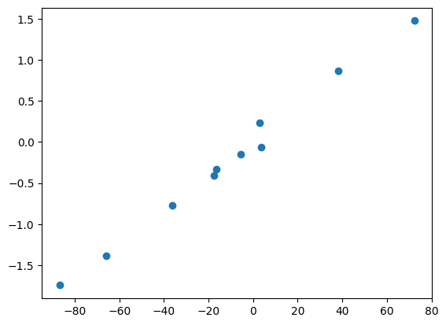
objective(res.params, X=X, y=y)Array(-1.17427129e+108, dtype=float64)posterior_variance2(1., 2.)Array(2.23706796, dtype=float64, weak_type=True)# the posterior variance computations doesjnp.sum(pi * sigma_grid**2), np.sum(post_assignment * post_var), posterior_variance(z, s)# posterior means agree
z = 0.
s = 10.
# posterior distribution for normal means model when g = scale mixture of normals.
post_mean = z * sigma_grid**2 / (s**2 + sigma_grid**2)
post_var = s**2 * sigma_grid**2 / (s**2 + sigma_grid**2)
log_normalizing_const = norm.logpdf(z, 0, scale = np.sqrt(s**2 + sigma_grid**2))
post_assignment = normalize(np.log(pi) + log_normalizing_const) # sums to one
eQ = - 0.5 * 1/s**2 * ((post_mean - z)**2 + post_var)
kl_q_g = jnp.sum(post_assignment * eQ) - logsumexp(jnp.log(pi) + log_normalizing_const)
# posterior mean computation is working
# posterior variance computation does not seem to be working
np.sum(post_assignment * post_mean) - posterior_mean2(z, s), np.sum(post_assignment * post_var) - posterior_variance2(z, s)(Array(0., dtype=float64), Array(7.10542736e-15, dtype=float64))#posterior_mean2 = jax.vmap(lambda nu: posterior_mean(nu[0], jnp.exp(nu[1])))
#posterior_variance2 = jax.vmap(lambda nu: posterior_variance(nu[0], jnp.exp(nu[1])))
posterior_assignment = lambda: normalize(np.log(pi) + norm.logpdf(nu[0], 0, scale = np.sqrt(np.exp(nu[1]) + sigma_grid**2)))
def loglik(nu, y, X):
b = nu[:, 0]
v = jnp.exp(nu[:, 1])
d = jnp.diag(X.T @ X)
return -0.5 * jnp.sum(y - X@b) - 0.5 * jnp.sum(d * v)
def kl(nu):
post_mean = posterior_mean(nu)
post_var = posterior_variance(nu)
post_assingment = posterior_assignment(nu)
nu = np.array([z, np.log(s)])
posterior_mean2(nu), posterior_variance2(nu), (Array(3.5166755, dtype=float32), Array(1.0133736, dtype=float32))jax.grad(posterior_mean2)(nu)Array([ 0.2099328, -2.70177 ], dtype=float32)jax.grad(posterior_variance2)(nu)Array([0.71372473, 4.8463917 ], dtype=float32)posterior_mean3 = jax.vmap(posterior_mean2)
posterior_variance3 = jax.vmap(posterior_variance2)posterior_variance2(nu)Array(20.993286, dtype=float32)# gradient based computation
nu = np.array([z, np.log(s)])
posterior_mean2(nu), posterior_variance2(nu)(Array(1.8652706, dtype=float32), Array(20.993286, dtype=float32))# analytic computation
normalize = lambda x: np.exp(x - logsumexp(x))
tau_grid = 1/sigma_grid**2
gamma = 1/np.exp(nu[1])
b = nu[0]
posterior_variance_grid = 1/(gamma + tau_grid)
posterior_pi = normalize(jnp.log(pi) + norm.logpdf(b, 0, np.sqrt(1/gamma + 1/tau_grid)))
np.sum(posterior_variance_grid * posterior_pi)/var/folders/0q/xlv6fxx51c17jf27j1ws0wx40000gn/T/ipykernel_97861/2498233326.py:3: RuntimeWarning: divide by zero encountered in divide
tau_grid = 1/sigma_grid**2np.float64(7.633511455047038)posterior_variance_gridarray([0. , 0.90909091, 2.85714286, 4.73684211, 6.15384615,
7.14285714, 7.82608696, 8.30508475, 8.64864865, 8.9010989 ])X = np.random.normal(size=(100, 10))
Nu = np.random.normal(size=(10, 2))
beta = posterior_mean3(Nu)#, posterior_variance3(Nu)
y = X @ beta + np.random.normal(size=100)def q2mix(nu, pi, sigma_grid):
"""
get mixture representation for tilted scale mixture of gaussians
"""
def kl(nu, pi, sigma_grid):
def elbo(nu, y, X):
mu = posterior_mean3(nu)
var = posterior_variance(nu)
d = jnp.diag(X.T @ X)
-0.5 * jnp.sum((y - mu)**2) - 0.5 * jnp.sum(d * var) - kl(nu, pi, sigma_grid)